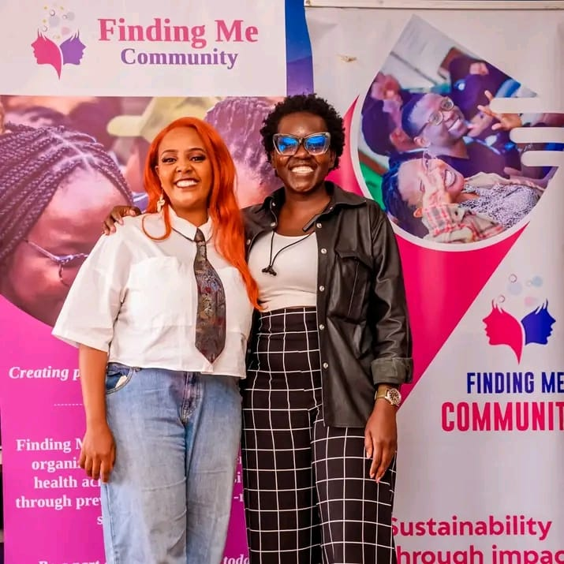
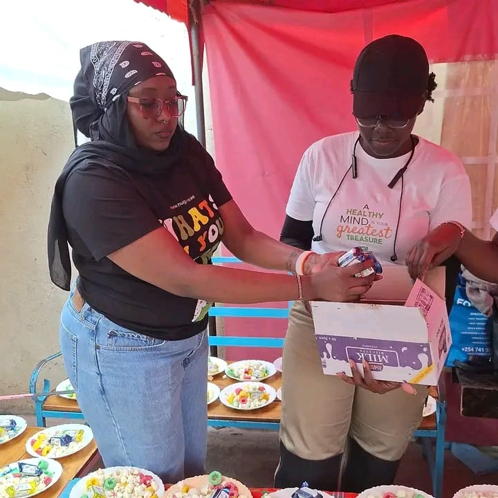

From a plastic chair under a tree to a seat at the boardroom table
Olwande Akoth is a Social Impact Advocate, PR strategist, Programs Manager and wardrobe stylist, built from ten years of hustle, community work and craft.
Photo: leading a mental health conversation at an Octopizzo Foundation outreach event. The stage is often whatever is available, a chair, a tree stump, a patch of shade.
Based in
Nairobi, Kenya
Experience
10+ years, cross-industry
Core tracks
Social impact, PR, corporate
Languages
English, Swahili, Dholuo
About
A multi-disciplinary Social Impact Advocate, PR professional, Wardrobe Stylist and Programs Manager committed to mental health advocacy, women's empowerment and community-centred development. Known for creating safe and inclusive spaces, leading transformative wellness programmes, and harnessing fashion, digital storytelling and grassroots mobilisation as tools for lasting social change.
Brings a rare blend of strategic program leadership and creative advocacy, working across Kenyan organisations to bridge the gap between lived community experience and impactful institutional change.
Intentionality
Purposeful living and leadership.
Creativity as advocacy
Fashion, storytelling and content as tools for change.
Community first
Grassroots voices centred in program design.
Sustainability
Eco-conscious living and circular economy principles.
Video: the work, in motion
Community programs, mental health advocacy and PR
Programs Manager
Concurrent / part-time engagementLeads national mental health and community empowerment programmes with a particular focus on women's wellness and psychological safety.
- Curates women-only wellness events: picnics, dance nights and healing circles built to nurture mental resilience and peer belonging.
- Facilitates cross-sector partnerships and mobilises community resources from design through evaluation.
- Designs corporate wellness webinars and grassroots activations to the same standard.
- Oversees strategic planning, monitoring and evaluation so impact is measured, not assumed.


PR & Communications Officer
Consultancy / part-time engagementSupports the Foundation's communications strategy for community development, sustainability and youth empowerment.
- Helped tell the story behind the Clean Energy Kitchen and WASH Initiative, a pilot circular economy programme converting sugarcane husks into clean cooking fuel while distributing water filters to underserved households, reducing indoor air pollution and improving access to safe drinking water.
- Supports a school feeding programme component that helps keep children in class, addressing hunger as a barrier to attendance alongside the clean energy and water work.
- Advocacy work in Ugunja, Siaya includes mental health outreach with a focus on period health.
School & community outreach
Mental health advocacy that starts at ground level: schoolyards, libraries and neighbourhood spaces, meeting young people where they already are.
- Rural school outreach in Ugunja, at Mukhwayo Primary School.
- A school assembly in Ruai.
- A wellness session at St Juliet's School, Kibera.
- Reading and talking with kids at Ajax Library, Mathare.


Public advocacy on the streets
Some of the most effective advocacy does not happen in a boardroom. It happens on a Nairobi CBD pavement, meeting street families and strangers on their lunch break exactly where they are.


Shelters & rescue homes
Children's homes and rescue homes across Nairobi get the same attention as the flagship events: a visit, a conversation, a reminder that someone outside is still paying attention.

Empowerment & distribution days
Impact that shows up as a box of sanitary pads, a bigger crowd every year, and a partnership that multiplies reach where budgets cannot.




Fashion, wardrobe and digital storytelling
Wardrobe Stylist
Supported the Head of Wardrobe and Costume Designer, organising and managing the wardrobe department for a television production.
- Costume prep: sourced, organised and labelled costumes.
- On-set assistance: helped actors with costume changes and repairs.
- Continuity management: tracked costume consistency with detailed notes.
- Collaboration: worked with wardrobe and other departments for seamless operations.
- Logistics: managed wardrobe transport and setup at filming locations.
On-screen & production credits
- Supporting role in Zari.
- Extra in Selina.
- Extra in Pink Ladies.
- Make-up assistant and extra on the set of Reckless.
Eco-Fashion Designer & Personal Stylist
- Designs upcycled, eco-conscious fashion pieces that turn reclaimed materials into wearable art.
- Uses fashion as a medium for empowerment and social commentary on identity, womanhood and environmental responsibility.
- Curates bespoke styling experiences built around confidence and self-expression.
Digital Creator & Social Impact Influencer
- Creates content exploring Kenyan culture, modern womanhood, relationships and emotional wellness.
- Bridges online influence with on-the-ground community conversations.
"Driven by purpose. Rooted in community. Powered by creativity."
A decade of commercial and administrative discipline
Account Manager
Promoted from AdminPromoted from Admin to Account Manager within twelve months, taking full ownership of TikTok's Sub-Saharan client portfolio and communications mandate.
- Managed end-to-end sales cycles for 10+ accounts, consistently meeting quarterly revenue targets.
- Served as primary point of contact for key brand clients and executive sponsors, driving retention and upsell.
- Executed PR pitches and media relations for TikTok's East African market across 15+ regional outlets.
- Represented TikTok at industry conferences, increasing inbound partnership inquiries.
Admin & Customer Care Representative
- Resolved 30+ daily client inquiries and cut post-onboarding support requests by an estimated 25%.
- Managed the MD's calendar and served as cross-departmental liaison across operations, sales and technical teams.
Receptionist & Dental Assistant
- First point of contact for patients, managing scheduling, registration and chairside support.
Admin & Customer Care Representative
- Daily administrative operations and front-line customer care for a fleet management company serving 50+ accounts.
- Led key account relationships that contributed to strong renewal rates and customer loyalty.
Open to partnerships, programs and account leadership roles
Based in Nairobi, Kenya. Available for social impact program design, PR and communications engagements, account management, styling and creative collaborations.